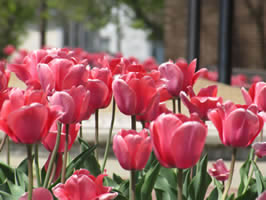

Model |
Capacity (grains) |
Flow Rate (gallons/minute) |
| HE 1.5" | 41,000-235,000 | 25-37 |
| HI-FLO 3 | 40,000-450,000 | 22-100 |
| HI-FLO 3e | 80,000-1,200,000 | 45-280 |
| HI-FLO xN | 100,000-900,000 | 74-146 |
| CSM | 100,000-900,000 | 67-259 |
| HI-FLO 50 | 800,000-2,000,000 | 150-400 |
Culligan Water Conditioning of Danville |
100 Stewarts Lane N. |
| PO Box 244 | |
| Danville, KY 40423-0244 |
QUOTATION for: |
| Wilderness Trace Manufacturing |
| 500 Stewarts Lane |
| Danville, KY 40422 |
| We hereby submit specifications and estimates for: |
Culligan HI-FLO 3e Water Softener |
|
Equipment Cost $3,990 |
QUOTATION for: |
| Wilderness Trace Manufacturing |
| 500 Stewarts Lane |
| Danville, KY 40422 |
| We hereby submit specifications and estimates for: |
Culligan HI-FLO 50 HS-2004 Water Softener |
|
Equipment Cost $27,100 |
For Custom Quotation |
email: culliganky@qx.net |
| phone: 800-892-6414 |
Copyright 2013, Culligan Water Conditioning of Danville. | PO Box 244, Danville, Kentucky 40423-0244
859-236-4965 | 800-892-6414 (within Kentucky) | Fax 859-236-4965
Site Updated November 10, 2013 | Page last updated December 13, 2017

Tulips in Danville, Kentucky |

For Price Quotation or Specifications:Contact Culligan of Danville Kentuckyphone: 800-892-6414 or 859-236-4965email: culliganky@qx.net |

|
|


Culligan HI-FLO 3e Water Softener |

Culligan HI-FLO 50 Softener |
Culligan of Danville furnishes and installs water softeners and automatic filters for commercial and industrial companies in Central Kentucky. Culligan of Danville Kentucky also furnishes quotations for water softeners for capital projects in North America. The water softeners have capacities ranging from 60,000 to 2,000,000 grains with flow rates from 25 gpm to 400 gallons/minute. Models include Culligan HE 1.5, Culligan HI-FLO 3, Culligan HI-FLO 3e, Culligan HI-FLO xN, Culligan CSM, and Culligan HI-FLO 50 Water Softeners. Ask us about the new Culligan Stainless Steel Series Hot Water Softener.